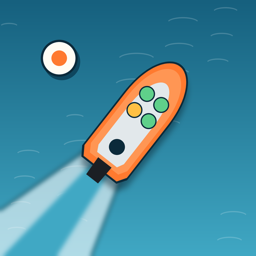

Tender PickupSupport
Questions, a bug, or a harbor you would like to see? Write to braznichenko@gmail.com.
How do I pick people up and drop them off?
Stop next to the boat, or inside the dashed orange ring at the yacht club, and press the orange Alongside button. It only lights up when you are close enough and slow enough.
Why did I lose a life?
Three things cost a life: a party that waited too long and gave up, a party that rode in the tender too long, and pressing Alongside at the wrong boat while you have passengers aboard who are bound for a boat.
The call disappeared before I read it.
That is the game: each call is shown and spoken once. Turn your sound on to hear it as well as see it. The voice can be switched off in Settings.
I bought the full game but the harbors are locked.
Open Settings (the gear on the first screen) or the unlock screen and tap Restore purchase, signed in with the Apple Account you bought it with.
My score is not on the leaderboard.
Standard and Ultra. Standard lists every open request in the radio log, with a bar for the time it has left. Ultra (the switch on the harbors screen) hides the log, so every call has to be remembered, and scores two points a passenger.
Weather and current. Each shift has its own conditions, shown under the small chart: wind, and the current with an arrow for where it is setting. The current drifts the tender whenever it is not alongside, so allow for it when stopping.
Racing online. Tap Race on the title screen, then Find an opponent. You need to be signed in to Game Center (Settings › Game Center). Races are in Monroe or Wilmette, so everyone can play. Your rating starts at 1200, moves after every online race, and fades five points a day after three days without one.
Leaderboards use Game Center. Sign in under Settings › Game Center on your device, then finish a shift. The monthly board starts over every 30 days.
Are the harbors real?
The shorelines, breakwaters, piers and docks are drawn from OpenStreetMap survey data. Monroe Harbor and Annapolis use the mapped positions of the real mooring buoys; in the other harbors the moorings are laid out in the real mooring fields. It is a game, not a chart: never navigate by it.